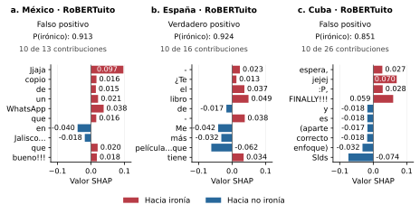

Las barras muestran hasta diez contribuciones de mayor magnitud absoluta por caso, en orden de aparición. Las palabras omitidas no tienen necesariamente contribución nula. Los valores están en la escala de probabilidad; las barras no incluyen el valor de referencia. Los ejes horizontales son comunes.
a. México: «Jajaja lo copio de un WhatsApp que rola en Jalisco.... pero que bueno!!!»
b. España: «- ¿Te gusta el libro de Pedro Sánchez? - Me gustó más la película.....que tiene montada.»
c. Cuba: «Javi creo que valió la pena la espera, jejej :P, FINALLY!!!!! y lo mejor es (aparte de su correcto enfoque) la aceptación entre los lectores. Slds»
| Posición | Palabra | SHAP | En barras |
|---|---|---|---|
| 1 | Jjaja | +0.096707 | Sí |
| 2 | lo | -0.000980 | No |
| 3 | copio | +0.016424 | Sí |
| 4 | de | +0.014663 | Sí |
| 5 | un | +0.021218 | Sí |
| 6 | +0.037894 | Sí | |
| 7 | que | +0.015836 | Sí |
| 8 | rola | +0.005099 | No |
| 9 | en | -0.039830 | Sí |
| 10 | Jalisco... | -0.018379 | Sí |
| 11 | pero | -0.014390 | No |
| 12 | que | +0.019962 | Sí |
| 13 | bueno!!! | +0.017690 | Sí |
| Posición | Palabra | SHAP | En barras |
|---|---|---|---|
| 1 | - | +0.023277 | Sí |
| 2 | ¿Te | +0.012866 | Sí |
| 3 | gusta | -0.005104 | No |
| 4 | el | +0.036639 | Sí |
| 5 | libro | +0.048955 | Sí |
| 6 | de | -0.017133 | Sí |
| 7 | Pedro | +0.004322 | No |
| 8 | Sánchez? | +0.007503 | No |
| 9 | - | +0.037799 | Sí |
| 10 | Me | -0.041609 | Sí |
| 11 | gustó | +0.011089 | No |
| 12 | más | -0.032153 | Sí |
| 13 | la | +0.008584 | No |
| 14 | película...que | -0.062043 | Sí |
| 15 | tiene | +0.034423 | Sí |
| 16 | montada. | +0.005905 | No |
| Posición | Palabra | SHAP | En barras |
|---|---|---|---|
| 1 | Javi | +0.006404 | No |
| 2 | creo | +0.006861 | No |
| 3 | que | +0.005912 | No |
| 4 | valió | +0.015883 | No |
| 5 | la | +0.006724 | No |
| 6 | pena | -0.000744 | No |
| 7 | la | +0.000229 | No |
| 8 | espera, | +0.027110 | Sí |
| 9 | jejej | +0.069886 | Sí |
| 10 | :P, | +0.028185 | Sí |
| 11 | FINALLY!!! | +0.059443 | Sí |
| 12 | y | -0.017617 | Sí |
| 13 | lo | -0.008642 | No |
| 14 | mejor | +0.009941 | No |
| 15 | es | -0.017679 | Sí |
| 16 | (aparte | -0.017354 | Sí |
| 17 | de | -0.012797 | No |
| 18 | su | -0.016753 | No |
| 19 | correcto | -0.018156 | Sí |
| 20 | enfoque) | -0.032090 | Sí |
| 21 | la | -0.005555 | No |
| 22 | aceptación | -0.012348 | No |
| 23 | entre | -0.015871 | No |
| 24 | los | -0.000190 | No |
| 25 | lectores. | +0.015266 | No |
| 26 | Slds | -0.074144 | Sí |